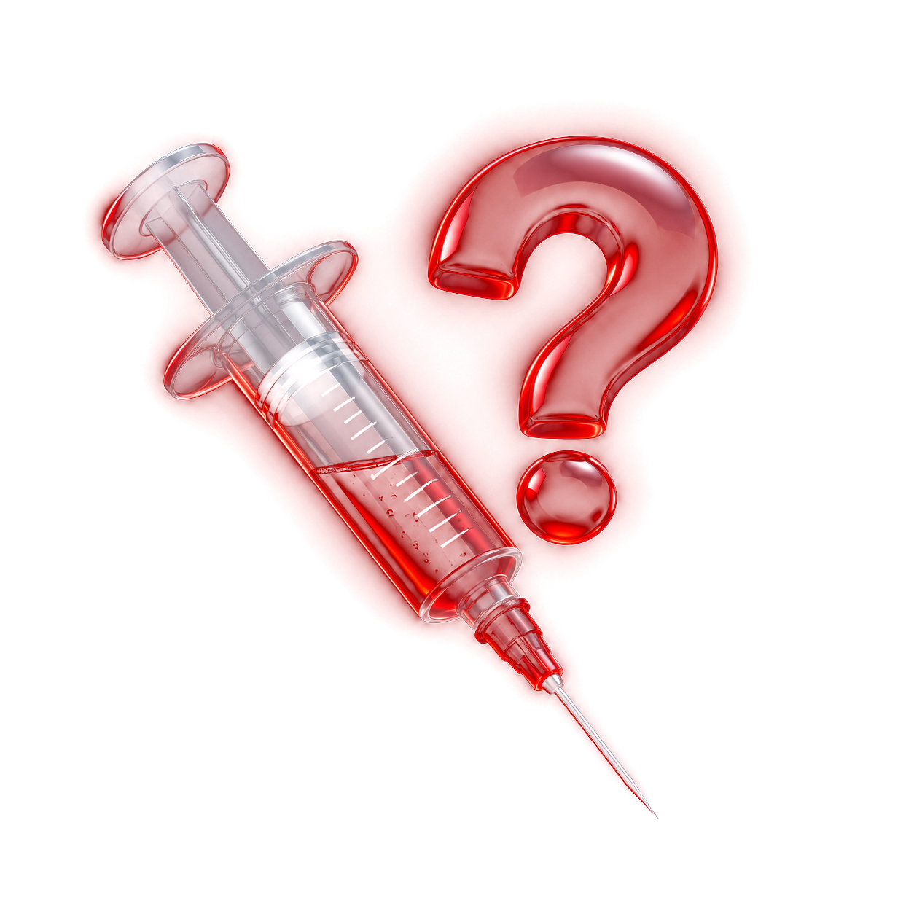

Bulking
until
I
look
like
an
anime villain
This is
Toji Fushiguro
PLACEHOLDER
YOU
photo or clip, body showing
PLACEHOLDER
TOJI
photo or clip, back or full body
Wide back
Arms like stone
V-taper
Looks fake
The
3 Excuses
1 Bad genetics
2 No time
3 Not natural

Me after
7 years
PLACEHOLDER
YOUR PHYSIQUE
photo, face showing (parallax push)
Just a
normal
guy
PLACEHOLDER B-ROLL
YOU AT WORK
laptop, desk, work call or office
PLACEHOLDER B-ROLL
YOU COACHING
form check, plan, check-ins or a call
PLACEHOLDER B-ROLL
YOU TAKING INSULIN
insulin pen if you use one
Type 1 diabetic since age
12
The
bulk
so far
Day 1
CLIP
TRAINING
CLIP
EATING
CLIP
TRAINING
CLIP
EATING
CLIP
TRAINING
Day 60,
today
NEXT
FROM TODAY
REC
Training.
Food.
Supplements.
PLACEHOLDER
TRAINING
photo or clip
PLACEHOLDER
FOOD
meal photo or clip
PLACEHOLDER
SUPPLEMENTS
your supplements
The
good
days
and the bad
How
long
will
it
take?
CLIP
TRAINING
Day 60,
today
NEXT
FROM TODAY
REC
6 months?
1 year?
Not
stopping
until
I
look
like
him
PLACEHOLDER
YOU
physique photo, face showing
PLACEHOLDER
TOJI
photo or clip
Follow me on
this
journey